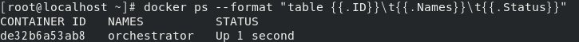

Failover for HA
목표
- 오케스트레이터를 이용한 HA 구현
- 오케스트레이터 GUI도구를 이용한 쉬운 이해
- Master가 다운되면 자동으로 Fail-Over 동작
- 인위적으로 마스터를 다운시켜서 동작 확인
- 사람의 개입 없이 자동으로 FailOver가 이뤄지도록 자동화를 구현
오케스트레이터 세팅
오케스트레이터 컨테이너 로드
-
오케스트레이터 컨테이너를 로드합니다(openarkcode/orchestrator)
이전에 생성한 mybridge에 연결하며 호스트포트 3000에 매핑합니다
docker run -i -t --name orchestrator -h orchestrator --net mybridge --net-alias=orchestrator -p 3000:3000 -d openarkcode/orchestrator:latest -
컨테이너가 잘 로드되었는지 확인합니다
docker ps --format "table {{.ID}}\t{{.Names}}\t{{.Status}}"
오케스트레이터를 위한 DB 설정
-
이전의 작업을 이어서 하기 위해 DB컨테이너를 재시작 합니다
컨테이너(도커 호스트)를 종료하지 않았다면 생략합니다
docker start db001 db002 db003 -
db001 SQL DB에 접속합니다
docker exec -it -uroot db001 /bin/bash mysql -uroot -p -
오케스트레이터를 위한 MySQL 유저 생성합니다
CREATE USER orc_client_user@'172.%' IDENTIFIED BY 'orc_client_password'; -
필요한 권한을 부여합니다 1
GRANT SUPER, PROCESS, REPLICATION SLAVE, RELOAD ON *.* TO orc_client_user@'172.%'; -
필요한 권한을 부여합니다 2
GRANT SELECT ON mysql.slave_master_info TO orc_client_user@'172.%'; -
웹브라우저에서 호스트의 3000번 포트에 연결하여 오케스트레이터 GUI에 접속합니다
http://{DOCKER HOST IP}:3000 //EC2 인스턴스를 사용하는 경우 네트워크 인바운드에 3000번 포트를 열어줘야합니다
오케스트레이터 설정
-
오케스트레이터에 컨테이너를 추가하기 위해 Clusters → Discover로 진입합니다

-
컨테이너의 이름과 (호스트)포트 번호를 등록합니다

-
오케스트레이터가 db001을 찾는데 성공했습니다

-
Dashboard에서 db001 컨테이너의 ID를 눌러 진입합니다

-
오케스트레이터가 SLAVE로 연결된 DB까지 잘 찾았습니다

마스터와 슬레이브가 연결될 때 까지 시간이 조금 걸릴 수 있습니다
-
이때 컨테이너 ID가 아닌 별칭으로 콘솔을 제어하고 싶으면 컨테이너를 생성할 때 -h 옵션으로 hostname을 부여하면 됩니다
HA(고가용성) 테스트
-
장애상황을 만들기 위해 마스터DB 컨테이너(db001)을 정지합니다
docker stop db001 -
컨테이너가 정지되었습니다

-
오케스트레이터가 db001에 접속 불가능해진것을 확인했고, Recover가 필요함을 안내합니다

-
Recover(복구) 메뉴에서 db002를 선택합니다

-
장애가 발생한 db001은 클러스터에서 격리되고

-
db002가 Master로 승격되었으며, db003은 Slave로써 db002를 Master 바라보고 있습니다

-
마스터가 된 db002는 ReadOnly 값이 OFF 된 것을 콘솔에서 확인할 수 있습니다

-
터미널에서 직접 확인해볼수도 있습니다
db002 SQL DB에 접속합니다
docker exec -it -uroot db002 /bin/bash mysql -uroot -p -
slave 상태조회 명령을 실행합니다
show slave status \G -
현재 Slave 상태가 아니기 때문에 empty set을 리턴합니다

Fail-Over 이후 복구
-
기존에 Master였던 db001 컨테이너를 다시 구동합니다
docker start db001 -
컨테이너가 접속 가능한 상태이지만 여전히 클러스터에서 분리되어 있습니다

-
db001 컨테이너의 MySQL에 접속합니다
docker exec -it -uroot db001 /bin/bash mysql -uroot -p -
db001을 slave로 동작시키기 위해 read_only로 설정합니다
set global read_only=1; -
db002 MASTER를 바라보도록 설정합니다
CHANGE MASTER TO MASTER_HOST='db002', MASTER_USER='repl', MASTER_PASSWORD='repl', MASTER_AUTO_POSITION=1; -
slave로써의 동작을 시작합니다
start slave; -
slave 상태를 확인합니다
show slave status \G -
db001이 db002를 마스터로 바라보고 있습니다

-
콘솔에서 db002가 Master로써 동작하는 것을 확인할 수 있습니다

-
페일오버가 발생했음을 확인하기 위해 콘솔에서 페일오버 내역을 Acknowledge 처리합니다

ack등 코멘트를 입력해서 확인
AUTO Fail-Over
-
오케스트레이터 컨테이너에 접속합니다
docker exec -it orchestrator /bin/bash -
오케스트레이터 설정 파일을 수정합니다
vi /etc/orchestrator.conf.json -
JSON에 다음 값을 수정 합니다. db001, db002간의 Failover만 테스트 하기 위해 db003이 마스터로 승격되는 일이 발생하지 않도록 제외해둡니다.
이대로 구현되면 db001 ↔ db002 간에 장애 발생시 번갈아가며 Master로 승격됩니다
"RecoverMasterClusterFilters":[ "*" ], "PromotionIgnoreHostnameFilters":[ "db003" ] -
오케스트레이터 컨테이너를 재시작 합니다
docker restart orchestrator -
Auto Failover가 잘 설정되면 하트 표시에 불이 들어옵니다

-
db002 컨테이너를 중지하여 Fail-Over를 테스트합니다
docker stop db002 -
별 다른 작업을 하지 않아도 db002가 클러스터에서 분리되었습니다

-
옆집 클러스터에서 db001이 마스터로 잘 살고 있습니다

-
페일오버가 잘 실행되었으면 복구를 위해 db002를 다시 로드합니다
docker start db002 -
db002의 MySQL서버에 접속합니다
docker exec -it -uroot db002 /bin/bash mysql -uroot -p -
db001을 마스터로 바라보도록 db002를 slave로 설정합니다
CHANGE MASTER TO MASTER_HOST='db001', MASTER_USER='repl', MASTER_PASSWORD='repl', MASTER_AUTO_POSITION=1; START SLAVE; -
이처럼 GUI 콘솔을 이용하면 변화를 쉽게 알 수 있습니다